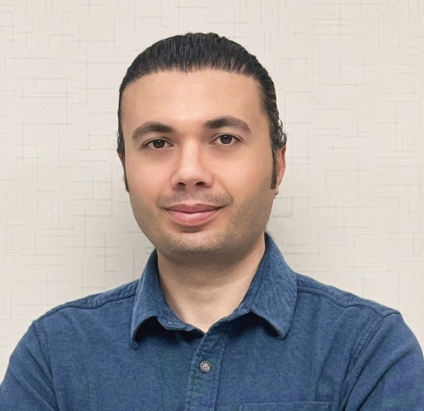

Meet the Team
Dr. Huanmei Wu, PhD
Faculty Lead, IHR Lab
Dr. Huanmei Wu is Chair of the Department of Health Services Administration and Policy (HSAP) and Assistant Dean for Global Engagement at Temple University's College of Public Health.
She holds a BS in chemistry from Tsinghua University and a PhD in computer science from Northeastern University. Prior to Temple, she chaired the Department of BioHealth Informatics at Indiana University's School of Informatics and Computing–Indianapolis.
A multidisciplinary researcher focused on data management, machine learning, and knowledge discovery in life sciences and public health, her work spans cancer radiotherapy, diabetes, cardiovascular disease, and autoimmune and neurodegenerative disorders, with an emphasis on precision care and predictive modeling.
She collaborates broadly with academic institutions, community health centers, industry partners, and local communities. Her research has been funded by the NSF, NIH, USAID, PCORI, JDRF, and RWJF.
Dr. Chiu C. Tan, PhD
Faculty, IHR Lab
Dr. Chiu C. Tan is an Associate Professor in the Department of Computer and Information Sciences at Temple University. He holds a PhD in Computer Science from the College of William & Mary and dual undergraduate degrees — a BS in Computer Science and a BA in Economics — from the University of Texas at Austin.
His research focuses on digital privacy, cybersecurity, and smart health, building on earlier work in wireless and mobile computing, RFID systems, vehicular networks, and cloud-storage security.
He serves as PI or Co-PI on multiple NSF-funded projects, including initiatives on AI in educational research, knowledge graphs to address homelessness, and cybersecurity training for healthcare professionals. Within the lab's portfolio, he leads the SaTC:EDU cybersecurity-training project and is a co-investigator on Dream-KG.
He has advised numerous PhD students who have gone on to faculty appointments and industry roles.
AnneMarie Tomosky, MPH
Senior Research Project Manager
AnneMarie Tomosky, MPH is a public-health researcher and senior project manager at the IHR Lab, where she supports interdisciplinary research applying data-driven methods and emerging technologies to complex societal challenges.
She holds a BS in Kinesiology (Health Professions concentration) and an MPH in Health Policy and Management from Temple University, and brings experience across clinical, academic, and global public-health settings — from AI-supported health research to global public-health systems development.
Her interests center on developing innovative health technology and translating it into meaningful, real-world impact. She enjoys live music, traveling, dance-fitness classes, and exploring how language and storytelling shape the way we understand health and one another.
She is guided by the principles of equity, collaboration, and building systems and tools that meet people where they are — and help them move forward.
Mukesh Patel
Research Software Developer
Mukesh is a Research Software Developer at Temple's College of Public Health and a recent MS graduate in Health Informatics, working at the intersection of healthcare and technology.
His major projects include a real-time PII-anonymization tool for sensitive health data and an LLM-powered chatbot supporting parental smoking cessation to reduce children's exposure to secondhand smoke.
With a foundation in embedded systems and data science, he applies machine learning, NLP, and large language models alongside database and cloud tools to build practical, deployable applications — from clinical decision-support systems and predictive models to interactive AI agents.
Outside of research, Mukesh enjoys long walks, reading, and hiking.

Javad M. Alizadeh
PhD Candidate · Graduate Research Assistant
Javad is a PhD candidate in Health Informatics at Temple University, integrating engineering, data science, and digital innovation to advance healthcare research and applied solutions.
His research leverages machine learning and real-world health data to generate actionable insights for conditions such as type-2 diabetes and hypertension, integrating clinical records with social determinants of health to improve outcomes and resource planning.
He is committed to translating research into practice by building clinical decision-support systems, predictive models, interactive visualizations, and conversational AI for clinicians and underserved populations. His technical expertise spans Python, machine-learning frameworks, and full-stack development.
Outside the lab, Javad enjoys chess, hiking, films, and traveling.
Junchao Fei
PhD Student · Graduate Research Assistant
Junchao is a PhD student in Health Informatics at Temple University.
His research focuses on building trustworthy, deployable AI methods that integrate clinical data with community context to strengthen disease monitoring and advance health equity.
He is also interested in making multi-source, multi-scale health data usable for longitudinal surveillance.
Rosie Nagy, MSHI, LCSW, OSW-C
PhD Student
Rosemary (Rosie) Nagy is a PhD student in Health Informatics. She holds a Master of Social Service from Bryn Mawr College and a Master of Science in Health Informatics from Temple University's College of Public Health.
Her research interests center on health equity, technology, and social work. She is a Licensed Clinical Social Worker (LCSW) and a Certified Oncology Social Worker (OSW-C) in Pennsylvania.
She manages an oncology social-work team at Temple University Hospital, where she leads initiatives to advance patient-centered care, integrate data-driven practices, and strengthen interdisciplinary collaboration in cancer treatment.
Outside of work, she enjoys trying new foods, reading, and caring for her plants and garden.
Syeda Maryam Abidi, MPH, DDS
Graduate Research Assistant · Graduate Teaching Assistant
Maryam Abidi is a PhD student in Health Policy and Health Services Research at Temple's College of Public Health, with a clinical background in dentistry and experience in healthcare administration and public-sector health settings.
Her interdisciplinary training lets her integrate clinical perspectives with methods from health policy and health-services research to inform evidence-based policy and improve healthcare delivery and access.
Her research interests include health-policy analysis, health-services research, healthcare access and equity, chronic-disease prevention, data-driven decision-making, and the translation of evidence into policy and practice.
Sarker Mohammed
PhD Student · Mechanical Engineering
Sarker Mohammed is a PhD student in Mechanical Engineering at Temple University's College of Engineering. He holds a BS in Computer Science & Physics and an MS in Electrical Engineering, both from Temple University.
He is a Research Assistant at Temple University's Computer Fusion Lab, where he leads software-development efforts and works at the intersection of artificial intelligence, security, and robotics. His research focuses on applied AI, with an emphasis on developing secure and trustworthy AI for robotic systems and deploying AI solutions for real-world applications.
Sarker has completed multiple software-engineering internships with the U.S. Department of War (DoW), applying AI and machine learning to real-world software-engineering and data-analysis problems, including AI-driven tools for data analysis and decision support. He is also a DoW SMART Scholar affiliated with the U.S. Army CECOM Army Software and Innovation Center (ASIC), where he works on software engineering and applied AI/ML applications.
Vivek Solanki
MS Student · Computational Data Science
Vivek Solanki is a graduate student pursuing a Master of Science in Computational Data Science at Temple University. His research interests lie at the intersection of artificial intelligence, machine learning, data science, information retrieval, and knowledge-based systems.
His work applies AI and data-driven methods to complex real-world problems, including retrieval-augmented systems, knowledge graphs, and machine-learning models for organizing and analyzing complex information. He is particularly interested in agentic AI, large language models, information retrieval, and developing practical, deployable AI systems that turn research into real-world impact.
His technical experience spans Python, machine learning, natural language processing, data analysis, knowledge graphs, cloud computing, and AI deployment. Outside of research, Vivek enjoys playing sports, meeting new people, and exploring new experiences.
Past Researchers
Aditi Vaid
Graduate Research Assistant (Alumna)
Aditi earned a master's degree in Health Informatics at Temple University, where she also completed her bachelor's degree in Biology.
She was a Research Assistant at the PHIRE Laboratory, where her work focused on using markerless and marker-based camera systems to estimate joint-angle kinematics.
In addition to her research, Aditi has experience as a group-fitness instructor, designing exercise programs tailored to diverse fitness levels.